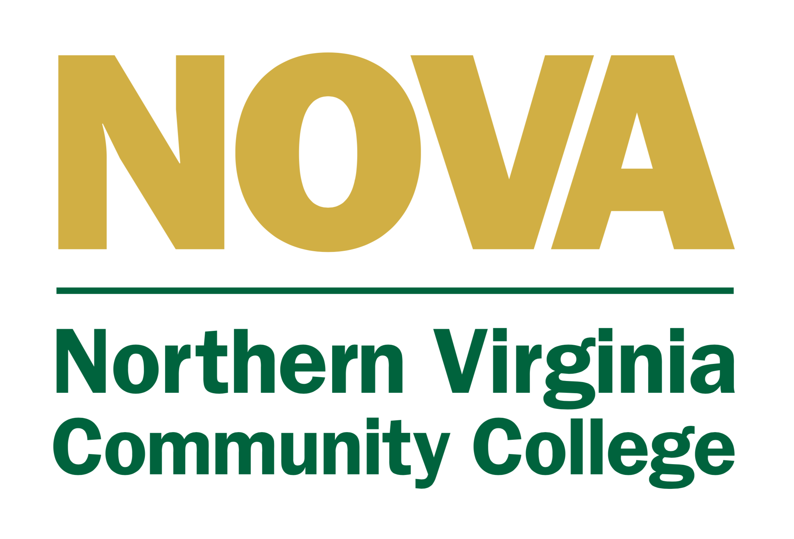

About Us
Academies of Loudoun - MATA Cybersecurity DE (2 year Pathway)
Explore the fundamentals of Information Technology through computer hardware, networking, and security. The MATA Cybersecurity program provides first-rate educational opportunities for students interested in pursuing careers in a broad range of professions that support our computer/information-based society. Through enrollment in the new two-year Cybersecurity program at Monroe Advanced Technical Academy, students will gain a basic understanding of emerging technologies including unified communications, mobile, cloud, and virtualization technologies. The course prepares students for postsecondary education and training and a successful career in information technology.
This course may assist the student in preparing for CompTIA’s A+, Network+, and Security+ industry certification exams. Students enrolled in the MATA Cybersecurity program also participate in the Air Force Association’s CyberPatriot National Youth Cyber Defense team competition. Mr. Staples works closely with students, ensuring their success and affording them opportunities for further exploration in cybersecurity, computer science and information technology. Through corporate partnership collaboration, students may acquire internships that lead to full time employment opportunities.
Cybersecurity I - Students enter the world of computer technology and gain practical experience in assembling a computer system. Students will install, configure, and secure various operating systems. Students will troubleshoot computers and peripherals and use system tools and diagnostic software. They develop skills in computer networking and resource sharing. In addition, students explore the relationships between internal and external computer components.
Cybersecurity II - This advanced course provides students with training in procedures for optimizing and troubleshooting concepts for computer systems, subsystems, and networks. Students explore network design and connectivity, network documentation, network limitations and weaknesses, and network security, standards and protocols.
Related Industry Certifications: CompTIA A+, CompTIA Network+, CompTIA Security+NVCC Dual Enrollment (24 credits total):

MATA Cybersecurity I -- (total of 12 NVCC credits - spring enrolled)ITN 106- Microcomputer Operating Systems (3 credits)
ITN 107- Personal Computer Hardware Troubleshooting (3 credits)
ITE 115- Introduction to Computer Applications and Concepts (3 credits)
ITE 180- Help Desk Support Skills (3 credits)
MATA Cybersecurity II -- (total of 12 NVCC credits - spring enrolled)ITE 182- User Support/Help Desk Principles (3 credits)
ITN 101- Introduction to Network Concepts (3 credits)
ITN 200- Administration of Network Resources (3 credits)
ITN 260- Network Security Basics (3 credits)
Links to NVCC programs of study towards which the above MATA Cybersecurity DE courses apply:IT Technical Support Career Studies Certificate (15 of 15 credits)
Cyber Security Career Studies Certificate (12 of 27 credits)
Information Systems Technology A.A.S. Degree (24 of 65 credits)
Cyber Security A.A.S. Degree (18 of 65 credits)
About The Teacher

Jeremy Staples
Mr. Staples is a certified IT Systems professional, who holds a Master of Science in Cybersecurity from Marymount University and a Bachelors of Business Administration in Information Systems from Radford University. Mr. Staples began his career as an educator after 13 years of IT field experience in private industry and public education, most recently as an IT Systems Specialist for Loudoun County Public Schools. Please feel free to contact him with any questions or concerns about Monroe Advanced Technical Academy's Cybersecurity program at the Academies of Loudoun.